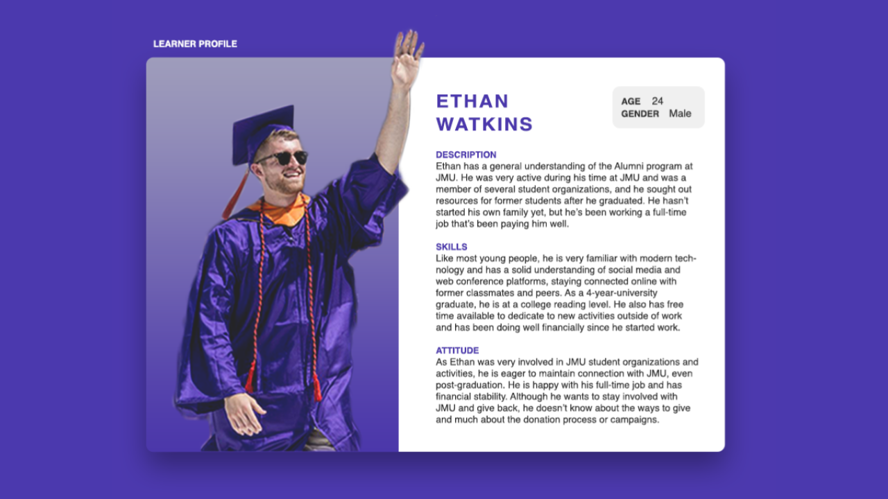
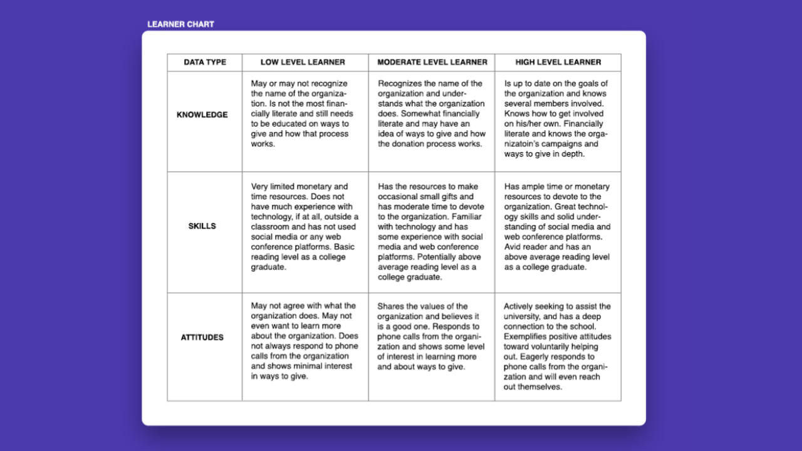

As an Educational Media minor, one of the higher level classes I was required to take for graduation was LTLE 385, which is the minor's capstone course. My classmates and I were divided into four groups of three members. Ashley Wenger, a junior marketing major and educational media minor, and Kyle Wittkowski, a senior communications major and educational minor, were my assigned teammates. Our client was the James Madison University Department of Strategic Gifts, and our assignment was to help their department with their instructional design needs by delivering a product (such as a website, presentation, or form of multimedia). Due to the COVID-19 pandemic, this entire project was completed virtually, and communication was done through email, Zoom calls, and FaceTime calls. My teammates and I collaborated on our work using Google Drive and Canva.
Our project aims to assist the Office of Strategic Gifts in shifting from in-person meetings with donors to online discussions and making sure those meetings are creative, exciting, and engaging. These sessions will help gain donation contributions from alumni, and specifically, new graduates. We designed a presentation to re-engage recent alumni with the JMU community and inform them how they can stay involved and donate to the school. The main challenges in this project were making the content as exciting as possible, given the lack of face to face interaction, keeping it concise enough to present in a 15-minute meeting, if necessary, and making it broad enough to contribute to a wide audience range.
We met with our client every Monday, on Zoom, to discuss questions and project updates. We also utilized this meeting time for data collection during the weeks of September 21st and 28th. The final date of project completion was December 10th. The major milestones of this project included creating the client report, data collection for a learner profile, creation of a learner profile, determining our final goals, objectives, and tasks, brainstorming product ideas, rapid prototyping, gathering feedback from the client, and meeting with the client. These factors helped determine if she, our client, was happy with the final product, and finally presenting the final work for this class. The client report was our first milestone to submit by September 25th. Next, we completed the learner profile, which was due October 2nd. Additionally, the final goals, objectives, and tasks occured before October 9th, alongside the rapid prototype on November 12th. Finally, we wrapped the project up with the final product and presentation on December 9th.
The forming–storming–norming–performing model of group development was first proposed by Bruce Tuckman in 1965, who said that these phases are all necessary and inevitable in order for the team to grow, face up to challenges, tackle problems, find solutions, plan work, and deliver results. This model is what our professor had us follow for our team stages. Our professor divided our project up into several milestones, consisting of a Client Report (which has essentially been summarized in the project description above); a Learner Profile and Learner Chart; Final Goals, Objectives, and Tasks; Rapid Prototype; and Final Products and Presentation.
For this milestone, we were to create a learner profile and learner chart using MS Word or MS PowerPoint. The purpose of it was to report the findings of our target population, uncovered during the data collection process. We collected our data during our meetings with the client, using an interview format with questions and notetaking. The client also provided a donor commitment continuum to help us get a better understanding of our learners (the donors). This contiuum will be kept confidential, but I have included the PowerPoint from our submission of this assignment below.
 Our next milestone was our final goals, objectives, and tasks. Here, we had to show that we understood the broad goal, the more specific objectives, and the very specific step-by-step instructions needed to address all content for the projects on which we were working this semester. We had to be sure to address all content necessary given results of our analyses, all content needed to respond to the detailed goals and objectives for our project, and all content that our client requested, provided to us, and asked us to research and identify. If there were any exceptions to the content, we had to justify this change in direction. This was our chance to gather, sequence and organize the content before creating a rapid prototype that visually shows the sequence and organization of the content in our final products. We got feedback from our client and professor about our proposed goals, objectives and tasks prior to submitting the final version that you see to the right.
Click here to view our Final Goals, Objectives, and Tasks in a new tab.
As mentioned before, our client is the Office of Strategic Gifts at JMU. Their job is to build relationships with potential donors and handle gifts and/or donations made to JMU. Their current project is the JMU Unleashed campaign. Typically, they meet with donors in person, get to know the donors, and explain how donations and gifts impact JMU. During this meeting they have various print materials to give to their learners that explains how donations and gifts impact the university and provide more information about JMU as a whole. However, due to COVID-19 this year their office has had to conduct these meetings via Zoom, and they do not have a new presentation method. Our client initially asked us for an engaging presentation to teach potential donors about giving back to JMU, and to help them continue to build relationships in a virtual setting. For this reason, we sketched a presentation on Canva, that can also be exported to PowerPoint, and included a Google Form survey at the end to analyze the effectiveness of the instruction.
Potential donors vary in age, gender, location and career type, but all of them have a connection to JMU, whether personally or through a family or friend. They are financially stable, have a fair or positive attitude towards JMU, and understand how to use technology and related applications such as a computer and Zoom. Potential donors most likely do not yet understand how to make a gift or donation to JMU. Additionally, the amount of time that each potential donor has to meet with the office of strategic gifts varies from 15 to 40 minutes. Therefore, we believe a presentation like this will be efficient and effective in communicating information, despite the conversation occurring through a computer screen, and can be well adapted to fit time constraints. We have implemented conversation notes and media throughout the presentation to make it more engaging and promote relationship building.
Our embedded rapid prototype presentation isn't available on smaller screens. Click here to view it if you using a smaller device.
In this final assignment, we presented your final work to our client, professor, and class. We organized a time with our client to present to her separately over Zoom, and then we reported her feedback (along with a recording of the client presentation) to our professor during a second presentation.
Our presentation incorporated fonts and colors identical to those on our style sheet, as well as visuals and style features that represented our client organization in a professional way. Our team utilized our visual design skills to very subtly incorporate representations of the target population and setting (James Madison University) in our PowerPoint template.
Each team member delivered a portion of the presentation in the time allotted for the presentations. As for the presentation itself, it was developed to be accessible, functional, aesthetically pleasing, comprehensive and addresses the need of the client. An editable version was provided to the client so that she and her department could clearly see what the best copy looks like and so that they may edit and update it after the conclusion of the project. We also provided the client with a plan for implementing the product and a separate file that explains to her what files are included and how to work with them. I have inserted our final presentation below, but all other materials have been determined to be confidential. View the presentation here if you are using a device with a smaller screen resolution.